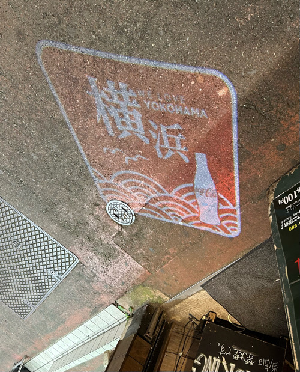
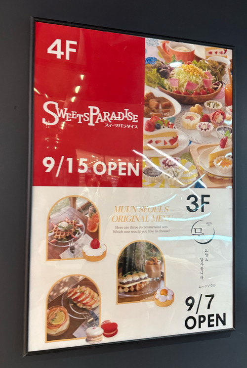

＜課題＞
- 地面を照らす路上看板 その店のオリジナルのロゴ看板を地面にライトアップしている。現代的で目にとまりやすい。
- エレベーターのデザイン 黒背景に白の数字のみのシンプルかつ大胆な看板である。このフロアが何階なのか一目でわかる。
- 各階の店舗の広告 赤白でまとめられた広告 写真付きなので各店の雰囲気がつかみやすくなっている。
(2023/10/07 横浜西口にて撮影 撮影者：muku)

(2023/10/07 横浜西口にて撮影 撮影者：muku)

(2023/10/07 横浜西口にて撮影 撮影者：muku)
